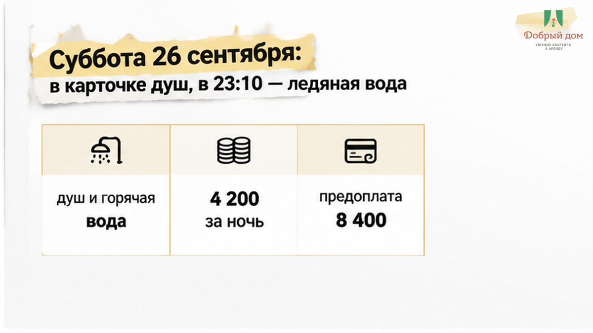
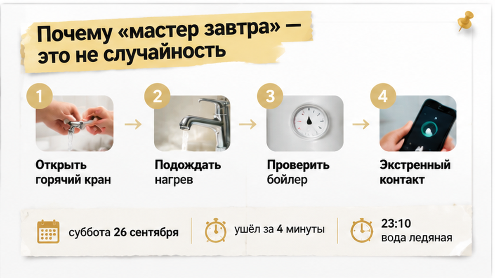
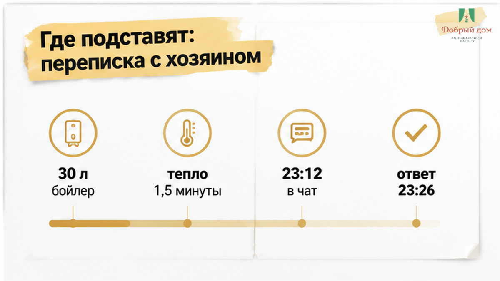
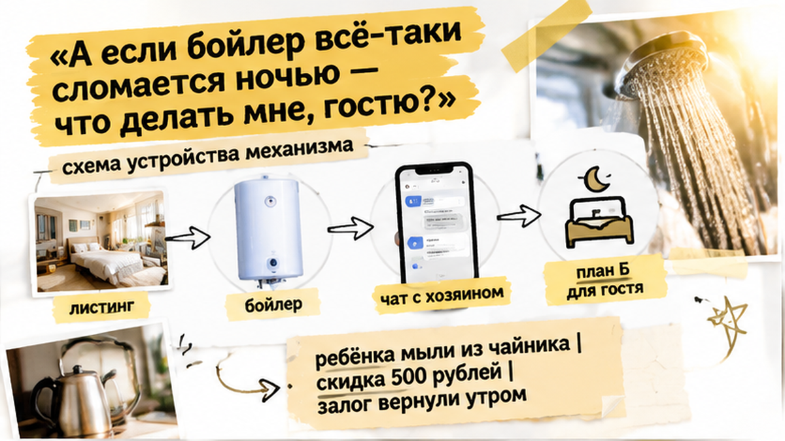
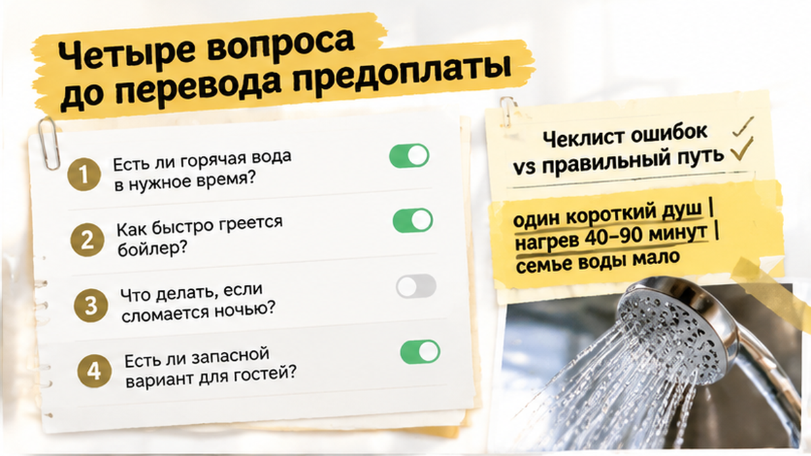
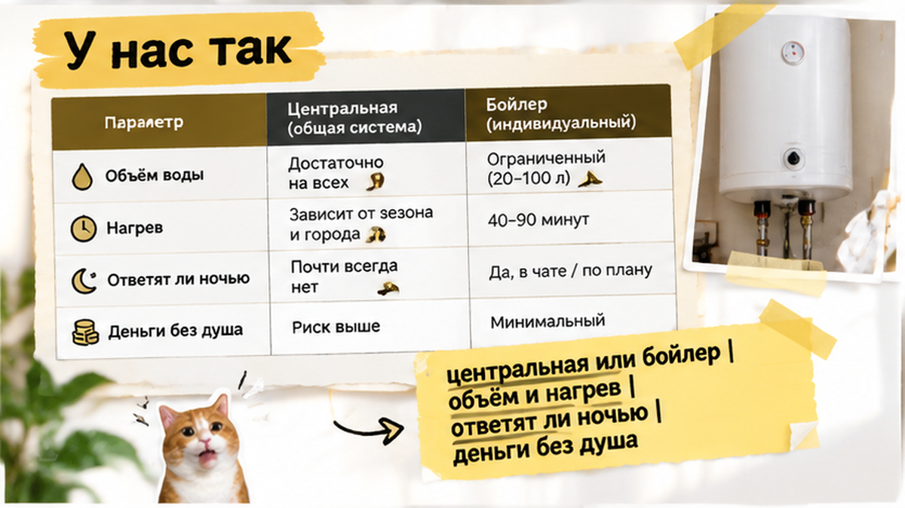
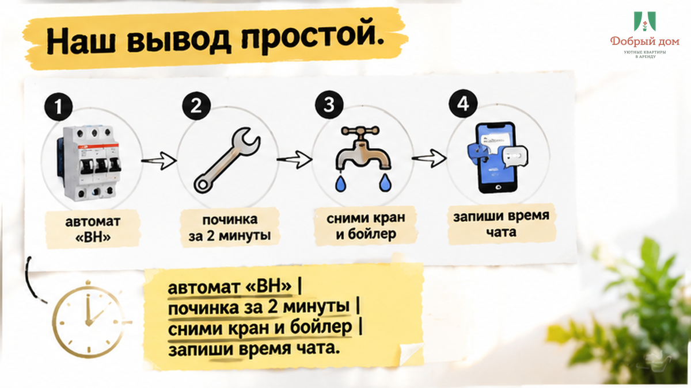

В субботу, 26 сентября, пара приехала в Тюмень на машине из Екатеринбурга. Двенадцать часов в дороге с остановками. Ребёнок спал на заднем сиденье последние полтора часа.
В карточке квартиры было написано: «просторный душ, всегда горячая вода». Студия в новостройке у Лесопарка, 4 200 ₽ за сутки. Пара забронировала двое суток, перевела предоплату 8 400 ₽ ещё в четверг и отдала 5 000 ₽ залога наличными хозяину в подъезде.
Хозяин встретил, отдал ключи, показал, где мусоропровод, и уехал через четыре минуты.
В 23:10 женщина включила воду в душе. Полторы минуты вода была тёплой. Потом стала ледяной. На стене в санузле мигал красным индикатор бойлера на 30 литров. До этого женщина его вообще не заметила: он был за декоративной панелью.
Вот где ломается посуточная аренда. Не в красивой карточке. В момент, когда вы уже внутри квартиры, ребёнок устал, а хозяин отвечает: «мастер завтра».
Покажу, что проверить до оплаты и что делать, если горячая вода пропала ночью.
Она написала хозяину в 23:12. Он ответил в 23:26 одной строкой: «мастер завтра».
Больше сообщений в ту ночь не было. Никаких «сейчас приеду», никакого «попробуйте выключить и включить автомат в щитке», никакого «давайте я верну вам вторые сутки».
Ребёнка мыли из чайника и кастрюли. Воду грели на индукционной плите по два литра.
Утром хозяин предложил «скидку 500 рублей за неудобство». Залог, к слову, вернули полностью — придираться было не к чему.
Только человек заплатил 8 400 ₽ за душ, которого не было. И это самое обидное в посуточной аренде: подставляет не мошенник. Подставляет обычный собственник, который сам не знает, какой у него в квартире водонагреватель и что с ним делать ночью.
Я хост посуточной в Тюмени. Это «Добрый дом».


Разберу честно, без пафоса.
Электрический накопительный бойлер — нормальная вещь. В Тюмени он стоит в огромном количестве квартир, и в моих в том числе. Он выручает, когда по городу идут плановые отключения горячей воды — а они у нас идут каждое лето и частично осенью, по графику ресурсоснабжающей организации, по домам и кварталам.
Это отдельная история, и к ней у меня претензий нет. Город предупреждает заранее, даты публикуют.
Проблема в другом. Бойлер в конкретной квартире — это прибор, у которого есть объём, время нагрева, ТЭН, магниевый анод, термостат и автомат в щитке. И у него есть хозяин, который либо знает про всё это, либо не знает ничего.
Бойлер на 30 литров при двух взрослых и ребёнке — это один короткий душ. Второй человек уже моется тёплой водой. Третий — холодной. Нагрев обратно займёт от сорока минут до полутора часов.
Если хозяин не написал вам это заранее, он не «обманул». Он просто не подумал. Но деньги-то вы отдали за «всегда горячую воду».
Второй сценарий хуже. Сработал автомат или выбило УЗО. Бойлер обесточен, и вода не остыла — она просто не грелась с самого вечера.
Это чинится за две минуты, если кто-то знает, где щиток и какой автомат подписан «ВН». В нашем случае никто не знал.
Я разбирал похожий случай подробно в тексте про то, как вода кончилась на второй минуте душа — там всё закончилось ровно так же: перепиской в час ночи и обещанием мастера.

Ко мне пишут гости, которые уже обожглись. И почти всегда переписка с плохим хостом выглядит одинаково.
Гость: «Скажите, горячая вода точно есть? Мы приедем поздно, около полуночи».
Хост: «Конечно есть, всё работает».
Гость: «А это центральная горячая или бойлер?»
Хост: «Какая разница, вода горячая».
Разница огромная. И то, что хост её не видит, — это красный флаг.
Дальше идёт вторая половина. Та самая, где я на своей стороне говорю «нет».
Гость: «Мы приедем в 23:00, можно ключи в кодовом ящике? Инструкцию потом пришлёте».
Я: «Нет. Так не заселяем».
Звучит жёстко, и часть людей уходит. Но объясняю я всегда одинаково: инструкция приходит до того, как вы садитесь в машину, а не после.
Потому что если вы в 23:10 обнаружите ледяную воду, вам нужно не искать мой номер в истории переписки. Вам нужно открыть сохранённое сообщение, где написано: бойлер 80 литров, панель справа от зеркала, автомат в щитке подписан, греется 50 минут, вот номер, по которому я отвечаю ночью.
Отдельная боль — когда человек с такой же инструкцией всё равно приезжает не в тот подъезд, потому что хост прислал адрес без литеры и номера секции. Ночью, с уставшим ребёнком в машине, это ломает вечер ничуть не меньше холодного душа.

Честный ответ: сначала проверить автомат в щитке и розетку. В половине случаев это всё.
Если не помогло, у вас должно быть два рабочих канала связи с хостом, а не один. Напишите нам в Telegram https://t.me/Dobriy_dom_72 или в MAX https://max.ru/id660300569233_biz — я разберу вашу ситуацию, даже если вы стоите в чужой квартире и просто не понимаете, что вам говорит хозяин.
Это бесплатно и занимает пять минут. Лучше спросить у постороннего хоста в полночь, чем греть воду в кастрюле.

Это не «чек-лист от юриста». Это то, что я сам спрашиваю, когда снимаю квартиру в другом городе. Занимает одно сообщение.
Сохраните переписку. До ночёвки напишите эти вопросы в чат. Если есть сомнения, снимите на видео холодную воду, табло бойлера, автомат и время сообщения хозяину.
Полный список вопросов к хосту, который я дополняю после каждого разбора, лежит в нашем канале: https://t.me/Dobriy_dom_72. Там же выкладываю случаи гостей, которые уже попали, — читать неприятно, но полезно.

Не буду обещать, что у нас никогда ничего не ломается. Техника есть техника.
Обещаю другое — порядок действий, который не зависит от настроения.
Перед каждым заездом уборщица включает горячую воду в санузле и на кухне и держит её открытой минуту. Если из крана идёт холодная или еле тёплая, она не заканчивает уборку, а пишет мне сразу.
Я решаю вопрос до вашего приезда, а не после.
Бойлер стоит на постоянном подогреве. Его не «включают перед гостем за полчаса».
В день заезда, до того как вы сядете в машину, вам приходит инструкция: точный адрес с подъездом и этажом, код домофона, где щиток и какой автомат за что отвечает, объём бойлера и время нагрева, номер, по которому я отвечаю ночью.
Я подробно расписывал эту логику в материале про то, как устроен вопрос с горячей водой и бойлером при заселении, и отдельно — про историю, где в объявлении написали «горячая вода есть», а гость получил ледяной душ и мигающий бойлер.
Если что-то всё-таки отказало ночью, я не пишу «мастер завтра». Я либо приезжаю, либо переселяю, либо пересчитываю сутки.
Вопросы по конкретной дате удобнее задать в MAX: https://max.ru/id660300569233_biz — отвечаю там быстро.

Ледяной душ в 23:10 — это почти никогда не поломка бойлера. Это хост, который не проверил воду перед заездом, не прислал инструкцию заранее и заложил себе право ответить одной строкой в 23:26.
Проверяется это одним сообщением из четырёх вопросов до того, как вы переведёте предоплату. Задайте их — и половина плохих вариантов отвалится сама, ещё до того, как вы сядете за руль.
Подписывайтесь на наш канал в Telegram https://t.me/Dobriy_dom_72 — там разборы случаев и список вопросов к хосту; мы также на связи в MAX https://max.ru/id660300569233_biz. Посмотреть свободные даты и забронировать квартиру в Тюмени можно здесь: https://добрыйдом-72.рф/booking/. Позвонить — +7 (993) 574-83-22. Написать менеджеру напрямую — https://t.me/Dobriy_dom_Tyumen.